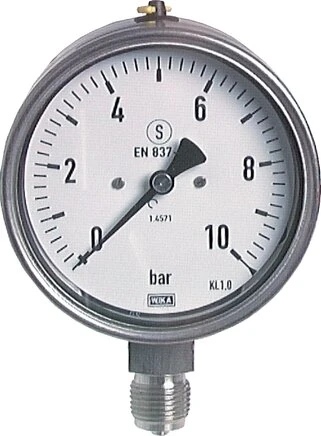
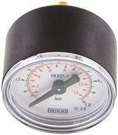

Dự án dầu khí (O&G) đặt ra những yêu cầu khắt khe bậc nhất cho thiết bị đo: môi chất ăn mòn, áp suất cao, khu vực nguy hiểm (hazardous area) và hồ sơ chứng chỉ đầy đủ để nghiệm thu. Chọn sai một thiết bị có thể ảnh hưởng cả tiến độ lắp đặt lẫn an toàn vận hành. Bài viết hướng dẫn cách chọn dụng cụ đo áp suất và nhiệt độ WIKA phù hợp cho O&G. Fast Group Engineering là đại lý cung cấp hàng chính hãng WIKA (Germany) tại Việt Nam, phục vụ EPC và O&G.

Gợi ý chọn nhanh
- Cần tra mã WIKA cũ hoặc tìm mã thay thế.
- Cần chuẩn hóa BOM/RFQ trước khi hỏi giá.
- Cần chọn nhóm sản phẩm đúng trước khi mở trang chi tiết.
- Part number, ảnh nameplate hoặc mã trong BOM.
- Số lượng, thời gian cần hàng và yêu cầu chứng từ.
- Thông số chính: dải đo, ren, vật liệu, output hoặc chiều dài.
- Trang tìm kiếm WIKA.
- Các danh mục sản phẩm chính.
- Trang liên hệ gửi RFQ.
Tóm tắt nhanh
- Ưu tiên wetted parts inox 316/316L cho môi chất ăn mòn.
- Khu vực nguy hiểm → chọn thiết bị có chứng nhận ATEX/IECEx phù hợp Zone.
- Áp cao/hơi → dùng safety pattern gauge (S3) kèm siphon và van chặn.
- Chuẩn bị CO/CQ, material cert 3.1, tuân thủ EN 837-1.

1. Vật liệu và wetted parts
Phần tiếp xúc môi chất (wetted parts) quyết định độ bền chống ăn mòn, và trong O&G đây là yếu tố sống còn vì môi chất thường chua hoặc chứa H₂S:
| Môi chất | Đề xuất vật liệu |
|---|---|
| Dầu, khí sạch | Đồng hợp kim hoặc inox 316 |
| Môi chất ăn mòn, chua (sour) | Inox 316L, hợp kim đặc biệt |
| Có H₂S | Vật liệu theo yêu cầu NACE (nếu áp dụng) |
Với môi chất chua, việc chọn đúng vật liệu theo yêu cầu NACE MR0175 (khi spec dự án yêu cầu) giúp tránh nứt do ăn mòn ứng suất — một dạng hỏng nguy hiểm và khó phát hiện.
2. Khu vực nguy hiểm (ATEX/IECEx)
Khu vực có khí hoặc hơi dễ cháy đòi hỏi thiết bị điện được chứng nhận phòng nổ:
- Transmitter và switch điện tử phải chọn bản có chứng nhận phù hợp Zone.
- Xác định rõ Zone (0/1/2), nhóm khí và cấp nhiệt độ theo hồ sơ dự án.
- Kiểu bảo vệ phổ biến gồm intrinsic safety (Ex i) và flameproof (Ex d) — chọn theo thiết kế điện của dự án.
3. Loại thiết bị theo ứng dụng
| Ứng dụng | Thiết bị WIKA đề xuất |
|---|---|
| Áp cao, an toàn nhân sự | Safety pattern gauge (EN 837-1, S3) |
| Rung động (bơm, máy nén) | Glycerin-filled gauge |
| Đo áp về hệ thống | Pressure transmitter 4–20 mA, 316L |
| Đo nhiệt về hệ thống | RTD Pt100 + transmitter, thermowell |
| Đọc nhiệt tại chỗ | Bimetal thermometer (bản Chemie) |
4. Bảo vệ và phụ kiện đi kèm
- Thermowell cho mọi điểm đo nhiệt trên đường process áp lực.
- Siphon cho hơi nóng; snubber giảm xung cho môi trường xung áp.
- Van chặn để kiểm định hoặc thay thiết bị mà không dừng hệ thống.
Trong O&G, cụm đo hoàn chỉnh (gauge + van chặn + siphon/snubber) thường được coi là một hạng mục thống nhất trong hồ sơ, nên cần được báo giá và giao đồng bộ.
Checklist chọn thiết bị cho hồ sơ dự án
- [ ] Xác định môi chất, áp suất, nhiệt độ, lưu tốc.
- [ ] Chọn wetted parts phù hợp (316/316L...).
- [ ] Kiểm tra yêu cầu ATEX/IECEx theo Zone.
- [ ] Chọn cấp chính xác theo yêu cầu đo.
- [ ] Bổ sung thermowell, siphon, snubber, van chặn.
- [ ] Yêu cầu CO/CQ, material cert, calibration nếu cần.
- [ ] Đảm bảo tuân thủ EN 837-1 và tiêu chuẩn dự án.
Vì sao chọn Fast Group Engineering cho dự án O&G
- Đội ngũ kinh nghiệm O&G / Heavy Industry (ex-Halliburton, Baker Hughes, SLB).
- Hỗ trợ rà mã theo spec, đề xuất thay thế và chuẩn bị material submittal.
- Cung cấp hàng chính hãng kèm CO/CQ, giao theo tiến độ dự án.
Quy trình material submittal trong dự án O&G
Trong các dự án EPC, thiết bị đo không chỉ cần đúng thông số mà còn phải đi kèm bộ hồ sơ được chủ đầu tư và tư vấn giám sát phê duyệt trước khi lắp. Quy trình thường gồm: nộp material submittal với datasheet, chứng nhận vật liệu (thường là EN 10204 3.1), chứng nhận phòng nổ (ATEX/IECEx) cho thiết bị điện, và bảng đối chiếu với spec dự án. Sau khi được duyệt, hàng mới được đặt và giao kèm CO/CQ. Việc chuẩn bị hồ sơ đúng ngay từ đầu giúp tránh vòng lặp chỉnh sửa tốn thời gian; đây là khâu mà một nhà cung cấp có kinh nghiệm O&G tạo ra khác biệt lớn so với mua hàng thông thường.
Ví dụ chọn cụm đo cho đường ống dầu chua
Giả sử cần đo áp suất trên một đường ống dầu chua (sour service), áp làm việc khoảng 60 bar, trong khu vực phân loại Zone 1. Một phương án điển hình: đồng hồ áp suất safety pattern (S3) thang 0–100 bar, wetted parts inox 316L theo yêu cầu NACE, lắp kèm van chặn để cô lập khi kiểm định và snubber nếu có xung áp; song song lắp một pressure transmitter 4–20 mA bản ATEX phù hợp Zone 1 để đưa tín hiệu về hệ điều khiển. Toàn bộ cụm đi kèm CO/CQ và material cert 3.1. Cách bố trí "vừa đọc tại chỗ vừa đưa tín hiệu về hệ thống" này rất phổ biến trong O&G vì đảm bảo cả an toàn vận hành lẫn giám sát tập trung.
Lưu ý về lead time của thiết bị chứng nhận
Một điểm dễ bị bỏ qua trong lập kế hoạch dự án O&G là thời gian giao của thiết bị có chứng nhận đặc biệt. Các cấu hình tiêu chuẩn thường có sẵn nhanh, nhưng thiết bị yêu cầu vật liệu đặc thù, chứng nhận ATEX/IECEx theo Zone cụ thể, hoặc material cert theo NACE có thể cần đặt hãng với lead time dài hơn. Vì vậy, nên xác định các hạng mục "long lead" ngay từ đầu và đưa vào RFQ sớm, để tiến độ mua sắm không trở thành nút thắt của cả dự án. Chúng tôi có thể tư vấn hạng mục nào nên đặt trước dựa trên spec của bạn.
Câu hỏi thường gặp
Wetted parts nên chọn 316 hay 316L?
316L (carbon thấp) chống ăn mòn và rỗ tốt hơn cho môi chất khắc nghiệt và tại mối hàn.
Thiết bị ATEX có sẵn không?
Chúng tôi tư vấn và cung cấp model WIKA có chứng nhận phù hợp theo Zone yêu cầu.
Có hỗ trợ hồ sơ nghiệm thu không?
Có — datasheet, CO/CQ và các chứng chỉ liên quan theo yêu cầu dự án.
Đặt lịch tư vấn dự án O&G
Gửi spec / BOQ / datasheet, chúng tôi rà mã và báo giá theo dự án.
- Email: minhduc@fastgroup.vn · Zalo: (+84) 938 888 958 · VP: TP.HCM & Vũng Tàu.
Fast Group Engineering – đại lý cung cấp hàng chính hãng WIKA (Germany) tại Việt Nam.
Bài liên quan: [Nhà cung cấp WIKA cho EPC & O&G] · [Safety pattern gauge EN 837-1] · [Tiêu chuẩn EN 837-1] · [Thermowell/Schutzrohr]